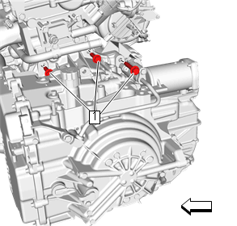
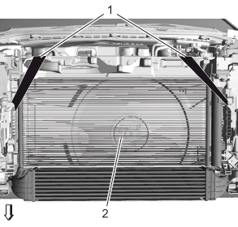
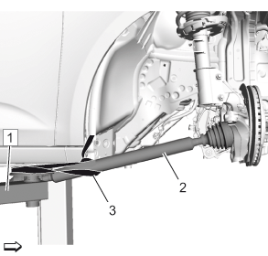
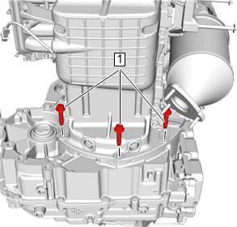
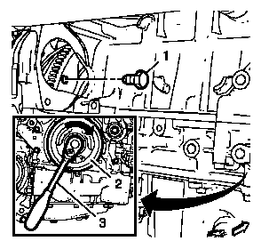
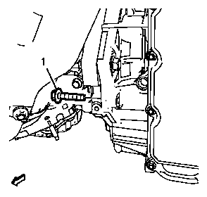
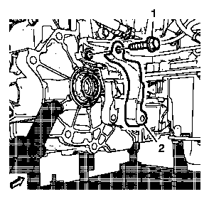

变速器的更换
专用工具
EN-51007发动机支撑夹具
当地同等工具：专用工具
拆卸程序
- 1.蓄电池托架»拆下–蓄电池托架的更换
- 2.换档杆拉线@换档杆拉线杆»拆下–选档杆拉线的更换
-
3.辅助油蓄能器线束连接器 (1)»断开

-
4.电气连接器 (1)@变速器控制模块（TCM）»断开

- 5.加热器出口软管»拆下–加热器出口软管的更换
- 6.散热器储液罐进口软管»拆下–散热器储液罐进口软管的更换
- 7.塞住和/或盖住管和变速器，以防止污染。
-
8.变速器上螺栓（1）»拆下[3x]
-
9.使用2根捆绑带 (1) 将散热器 (2) 固定到前端上横梁。注意:为清晰起见，图片显示的是不带保险杠的车辆前部。
- 10.举升和顶起车辆。举升和顶起车辆
- 11.排空变速器油。变速器油排放和加注
- 12.传动系统和前悬支座»拆下–传动系统和前悬架支架的更换
- 13.前排气管»拆下–前排气管的更换
- 14.右前轮驱动轴@变速器»断开–前轮驱动半轴的更换－右侧驱动轴仍在轮毂上。
-
15.使用捆绑带 (3) 将右驱动轴 (2) 固定到起重机 (1) 上。
- 16.左前轮驱动轴@变速器»断开–前轮驱动半轴的更换－左侧驱动轴仍在轮毂上。
- 17.使用捆绑带将左驱动轴固定到起重机上。
- 18.变速器支座柱托架»拆下–变速器支座柱托架的更换
-
19.变速器下螺栓 (1)»拆下[3x]
- 20.起动机»拆下–起动机的更换
-
21.变矩器@挠性盘»拆下
- 21.1 使用合适的工具 (3) 在曲轴扭转减振器 (2) 处顺时针转动发动机，直到挠性盘螺栓 (1) 显现。
- 21.2 挠性盘螺栓 (1)»拆下并报废
- 21.3 在曲轴扭转减振器处顺时针转动发动机120度。
- 21.4 第二个挠性盘螺栓»拆下并报废
- 21.5 对于第三个挠性盘螺栓，重复以上2个步骤。
- 22.降下车辆。
- 23.安装发动机支撑夹具。
- 24.变速器支座»拆下–变速器支座托架的更换－左侧
- 25.用EN-51007支撑夹具在左侧将发动机和变速器降下合适距离。
- 26.举升车辆。
-
27.变速器前下螺栓 (1)»拆下
- 28.用合适的千斤顶支撑变速器。
-
29.变速器后螺栓 (1)»拆下
- 30.变速器变矩器盖 (2)»拆下
-
31.变速器@发动机»拆下注意:分离并拆下变速器的同时,确保变矩器一直牢固就位于变速器输入轴上。
- 32.降下变速器带有千斤顶的一侧，直至可拆下变速器。
- 33.冲洗变速器油冷却器和管路并进行流量测试。变速器油冷却器冲洗和流量测试
安装程序
- 1.必要时转移部件。
- 2.如果拆下的变速器被重新安装，则清洁变矩器的螺纹。
- 3.用变速器千斤顶和DT-47648固定工具举升变速器并将变速器放置于发动机上。
- 4.变速器变矩器盖 (2)»安装
-
5.变速器后螺栓 (1)»安装并紧固58 N•m（43 lb ft）告诫：有关紧固件的告诫
- 6.变速器前上螺栓»安装并紧固58 N•m（43 lb ft）
- 7.拆下变速器千斤顶。
- 8.变速器前下螺栓 (1)»安装并紧固58 N•m（43 lb ft）
- 9.降下车辆。
- 10.使用EN-51007支撑夹具，在变速器侧将发动机/变速器组件举升到初始位置。
- 11.变速器支座»安装–变速器支座托架的更换－左侧
- 12.拆下发动机支撑夹具。
- 13.举升车辆。
- 14.变矩器@挠性盘»安装
- 14.1 使用合适的工具 (3) 在曲轴扭转减振器 (2) 处顺时针转动发动机，直到挠性盘螺栓孔显现。
-
注意:维修时可能提供未密封的螺栓。此时在螺栓上涂抹螺纹锁止胶。如果紧固件被密封，则安装新的变矩器至飞轮螺栓。请勿重复使用旧的螺栓。14.2 挠性盘螺栓»安装并紧固60 N•m（44 lb ft）注意:安装新的螺栓。
- 14.3 在曲轴扭转减振器处顺时针转动发动机120度。
- 14.4 第二个挠性盘螺栓»安装并紧固60 N•m（44 lb ft）
- 14.5 对于第三个挠性盘螺栓，重复以上步骤。
- 15.起动机»安装–起动机的更换
- 16.变速器下螺栓 (1)»安装并紧固[3x]58 N•m（43 lb ft）
- 17.变速器支座滑柱托架»安装–变速器支座柱托架的更换
- 18.右驱动轴 (2) @起重机 (1) »拆下
- 19.右前轮驱动轴@变速器»安装–前轮驱动半轴的更换－右侧
- 20.左驱动轴@起重机»拆下
- 21.左前轮驱动轴@变速器»安装–前轮驱动半轴的更换－左侧
- 22.前排气管»安装–前排气管的更换
- 23.传动系统和前悬支座»安装–传动系统和前悬架支架的更换
- 24.降下车辆。
-
25.散热器 (2) @前端上横梁»拆下注意:为清晰起见，图片显示的是不带保险杠的车辆前部。
- 26.变速器上螺栓（1）»安装并紧固[3x]58 N•m（43 lb ft）
- 27.散热器储液罐进口软管»安装–散热器储液罐进口软管的更换
- 28.加热器出口软管»安装–加热器出口软管的更换
-
29.电气连接器 (1)@变速器控制模块»连接
-
30.辅助油蓄能器线束连接器 (1)»连接
- 31.换档杆拉线@换档杆拉杆»安装–选档杆拉线的更换
- 32.调整选杆拉线。选档杆拉线的调整
- 33.加注变速器油。变速器油排放和加注
- 34.蓄电池托架»安装–蓄电池托架的更换
- 35.维修后，参见控制模块参考，以便进行编程和设置程序。
- 36.路试车辆。